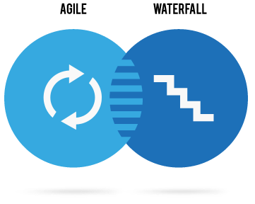
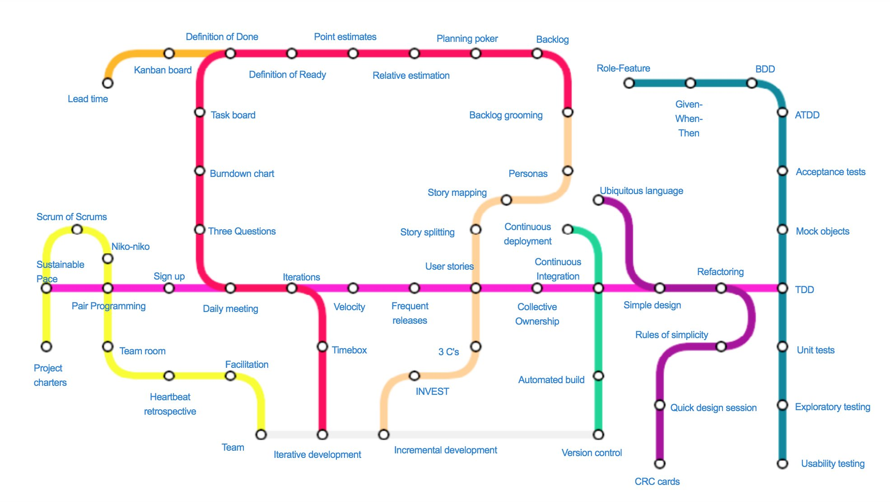
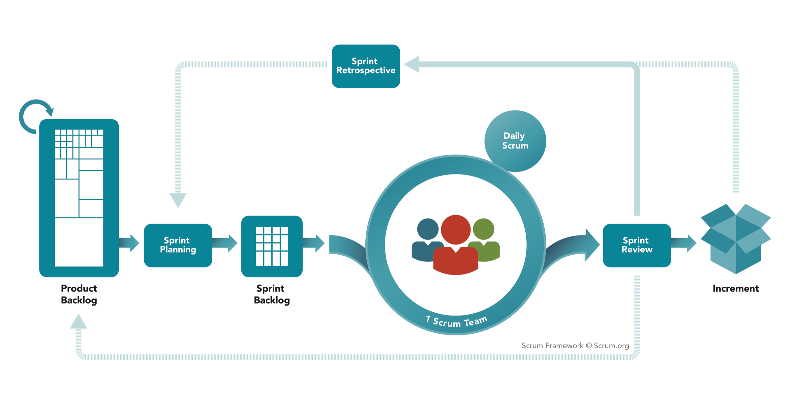
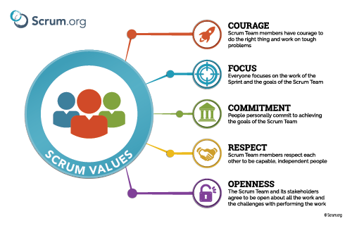
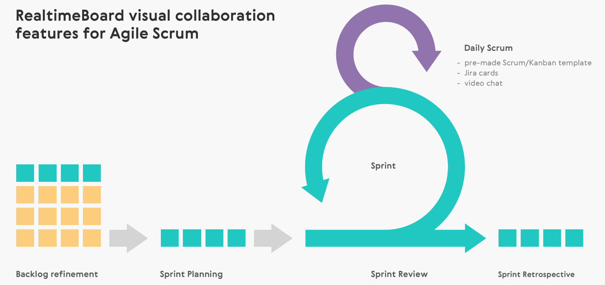
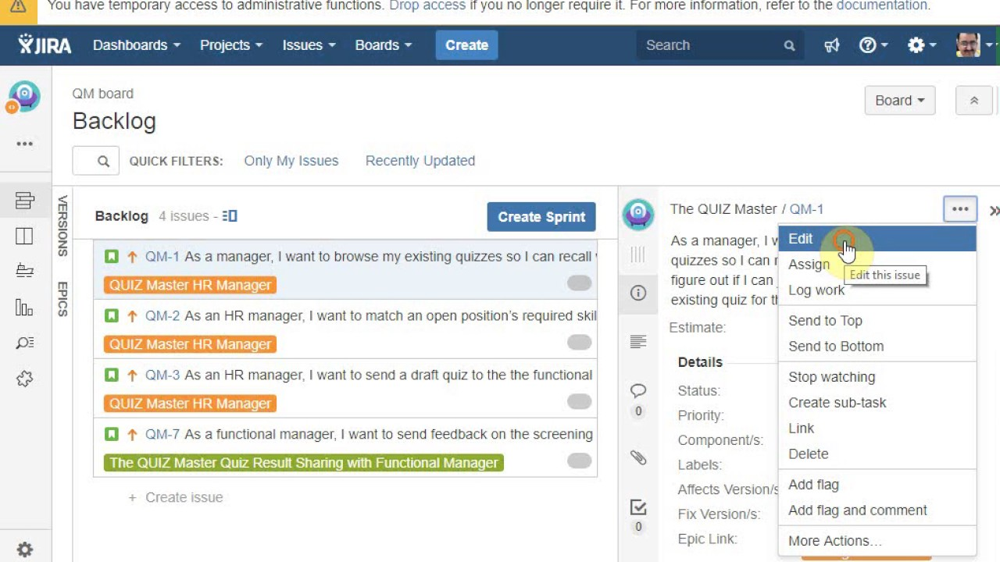
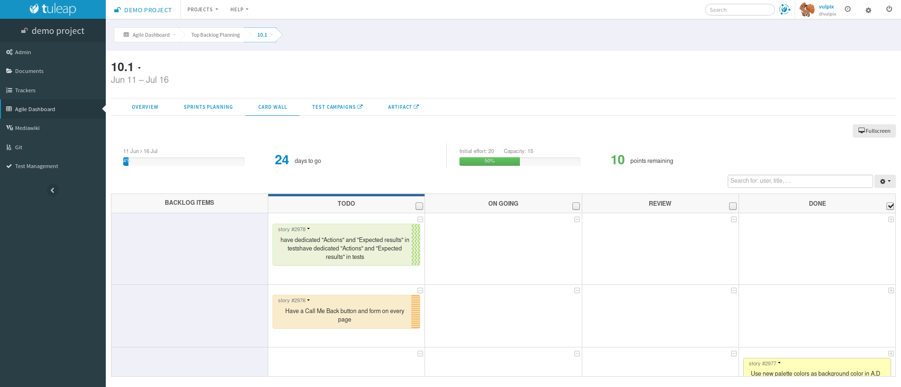
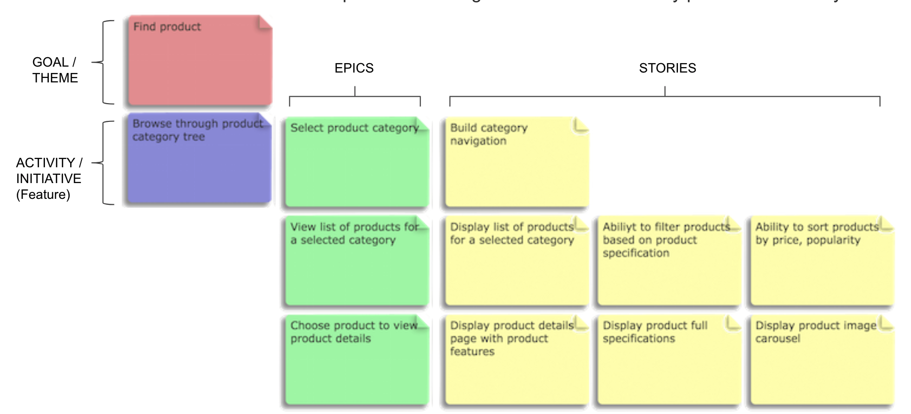

<!doctype html>
<html lang="en">
  <head>
    <meta charset="utf-8">

    <title>Fundamentals of Backend and Blockchain Development</title>

    <meta name="author" content="Dhruvin Parikh">

    <meta name="apple-mobile-web-app-capable" content="yes" />
    <meta name="apple-mobile-web-app-status-bar-style" content="black-translucent" />

    <meta name="viewport" content="width=device-width, initial-scale=1.0, maximum-scale=1.0, user-scalable=no, minimal-ui">

    <link rel="stylesheet" href="../../reveal.js/css/reveal.css">
    <link rel="stylesheet" href="../../reveal.js/css/theme/black.css" id="theme">

    <!-- Code syntax highlighting -->
    <link rel="stylesheet" href="../../reveal.js/lib/css/zenburn.css">

    <!-- Printing and PDF exports -->
    <script>
      var link = document.createElement( 'link' );
      link.rel = 'stylesheet';
      link.type = 'text/css';
      link.href = window.location.search.match( /print-pdf/gi ) ? '../../reveal.js/css/print/pdf.css' : '../../reveal.js/css/print/paper.css';
      document.getElementsByTagName( 'head' )[0].appendChild( link );
    </script>

    <!--[if lt IE 9]>
    <script src="../reveal.js/lib/js/html5shiv.js"></script>
    <![endif]-->

    <style>
      .reveal .slides h1, .reveal .slides h2, .reveal .slides h3 {
        text-transform: none;
      }

      .two-column {
        display: flex;
        flex-wrap: wrap;
      }

      .two-column em {
        margin: 20px;
      }

      .reveal .big-and-bold {
        font-weight: bold;
        font-size: 135%;
      }

      .reveal .shrunk-a-bit {
        font-size: 90%;
      }

      .reveal .shrunk-a-bit pre {
        width: 100%;
      }

      .reveal pre {
        width: 100%;
      }

      .reveal .highlight {
        color: yellow;
        font-weight: bold;
      }

      .reveal .highlightRed {
        color: red;
        font-weight: bold;
      }

      .left {
        left:-8.33%;
        text-align: left;
        float: left;
        width:50%;
        z-index:-10;
      }

      .right {
        left:31.25%;
        top: 75px;
        text-align: left;
        float: right;
        z-index:-10;
        width:50%;
      }
    </style>
  </head>

  <body>
    <div class="reveal">
      <div class="slides">

<!------------------------------------------------------->


<section data-markdown><script type="text/template">

## CSBC 1000 - Fundamentals of Backend and Blockchain Development

### Class 5: The product development process 

*Dhruvin Parikh*

</script></section>


<section data-markdown><script type="text/template">

## Class Plan
* Agile software development methodology 
* Scrum fundamentals
* Group activity
* Quiz

</script></section>

<section data-markdown><script type="text/template">

## Purpose
* Developers are a core part of a team
* Need a fundamental understanding of how SDLC works
* Often thrown onto teams without an explanation of how things work
* Will give you a leg up and allow you to join Agile teams
with an understanding of process
* Allow you to focus on your output

</script></section>

<section data-markdown><script type="text/template">

## What is SDLC?


<aside class="notes">
  How does SDLC work?
The software development lifecycle (SDLC) outlines several tasks required to build a software application. 
The development process goes through several stages as developers add new features and fix bugs in the software.

The details of the SDLC process vary for different teams. However, we outline some common SDLC phases below.

Plan
The planning phase typically includes tasks like cost-benefit analysis, scheduling, resource estimation, and 
allocation. The development team collects requirements from several stakeholders such as customers, internal and 
external experts, and managers to create a software requirement specification document.

The document sets expectations and defines common goals that aid in project planning. The team estimates costs, 
creates a schedule, and has a detailed plan to achieve their goals.

Design
In the design phase, software engineers analyze requirements and identify the best solutions to create the 
software. For example, they may consider integrating pre-existing modules, make technology choices, and 
identify development tools. They will look at how to best integrate the new software into any existing 
IT infrastructure the organization may have.

Implement
In the implementation phase, the development team codes the product. They analyze the requirements to identify 
smaller coding tasks they can do daily to achieve the final result.

Test
The development team combines automation and manual testing to check the software for bugs. Quality analysis 
includes testing the software for errors and checking if it meets customer requirements. 
Because many teams immediately test the code they write, the testing phase often runs parallel to the 
development phase.

Deploy
When teams develop software, they code and test on a different copy of the software than the one that the users 
have access to. The software that customers use is called production, while other copies are said to be in the 
build environment, or testing environment.

Having separate build and production environments ensures that customers can continue to use the software 
even while it is being changed or upgraded. The deployment phase includes several tasks to move the latest 
build copy to the production environment, such as packaging, environment configuration, and installation.

Maintain
In the maintenance phase, among other tasks, the team fixes bugs, resolves customer issues, and 
manages software changes. In addition, the team monitors overall system performance, security, and 
user experience to identify new ways to improve the existing software.
</aside>

</script></section>


<section data-markdown><script type="text/template">

## What is Agile?
* Main thing: ability to create and respond to change
* Consists of many methodologies
 * Scrum
 * Kanban
 * Extreme Programming (XP) or Agile methodology

</script></section>

<section data-markdown><script type="text/template">

## What is Agile?


</script></section>

<section data-markdown><script type="text/template">

## What is waterfall?


<aside class="notes">
  Waterfall
The waterfall model arranges all the phases sequentially so that each new phase depends on the outcome of the 
previous phase. Conceptually, the design flows from one phase down to the next, like that of a waterfall.

Pros and cons
The waterfall model provides discipline to project management and gives a tangible output at the end of each phase. 
However, there is little room for change once a phase is considered complete, as changes can affect the 
software's delivery time, cost, and quality. Therefore, the model is most suitable for small 
software development projects, where tasks are easy to arrange and manage and requirements can be 
pre-defined accurately.
</aside>

</script></section>

<section data-markdown><script type="text/template">

## Agile Vs Waterfall



* Agile : features delivery linearly over time
* Waterfall : feature delivery  is non-linear over time

</script></section>

<section data-markdown><script type="text/template">

  ## Agile Vs Waterfall
  
  * Use Agile if:
   * Need to get to market fast
   * Product definition is unclear e.g. early stage start up
  * Use waterfall if:
   * Requirement is to have very little room for error
   * Requirement is to focus on high quality and correctness. e.g. an investment app
</script></section>


<section data-markdown><script type="text/template">

## 12 principles (1/2)

* Our highest priority is to satisfy the customer through early
and continuous delivery of valuable software.
* Welcome changing requirements, even late in development.*
* Deliver working software frequently.
* Business people and developers must work together.
* Build projects around motivated individuals.
* Working software is the primary measure of progress.

</script></section>

<section data-markdown><script type="text/template">

  ## 12 principles (2/2)
  
  * Promote sustainable development; can work at the pace
  indefinitely.
  * Continuous attention to technical excellence and good design
  enhances agility.
  * Simplicity–the art of maximizing the amount of work not done–is
  essential.
  * The best architectures, requirements, and designs emerge from
  self-organizing teams.
  * At regular intervals, the team reflects on how to become more
  effective, then tunes and adjusts its behavior accordingly.
  
  </script></section>

<section data-markdown><script type="text/template">

  ## Agile subway
  
   

</script></section>


<section data-markdown><script type="text/template">

  ## Iterative & Incremental
  1. Verify Idea
  2. Improve it
  3. Add value
  4. Ready it
  5. Done

</script></section>


<section data-markdown><script type="text/template">

  ## Scrum
  * A framework for developing software based on
  empiricism
  * Not focusing on algorithmic and hyperplanned
  development
  * Focused on people and self-organization

  <aside class="notes">
    empiricism is the idea that all learning comes from only experience and observations.
  </aside>

</script></section>

<section data-markdown><script type="text/template">

  ## Scrum framework
  
   

</script></section>


<section data-markdown><script type="text/template">

  ## Scrum Values
  

</script></section>

<section data-markdown><script type="text/template">

  ## Scrum Team Roles
  * Product Owner 
  * Scrum Master
  * Development Team

</script></section>


<section data-markdown><script type="text/template">

  ## Product Owner
  * Responsible for maximizing the value of the product resulting from work of the Development Team
  * Single person accountable for the product
  * Writing User Stories
  * Reordering the Product Backlog (prioritizing)
  * Ensures Development Team understands backlog items

</script></section>


<section data-markdown><script type="text/template">

  ## Scrum Master
  * Responsible for promoting and supporting Scrum
  * Serves the Product Owner, Development Team, and entire organization
  * Helps PO manage backlog, write clear user stories, ensures product goals are well understood
  * Helps Dev Team be self-organized and accountable, removes impediments (unblocks), pushes back against PO when the impossible is requested
  * Helps entire org by coaching Scrum, planning and facilitating Scrum events and ceremonies, working with other Scrum Masters

</script></section>


<section data-markdown><script type="text/template">

  ## Development Team
  * Responsible creating a potentially releasable amount of work at the end of each Sprint, and deciding on what amount of work is possible
  * Nobody tells them how to do their work
  * Can include developers, UI/UX, testers, or anybody else
  who is responsible hands-on for building a part of the
  product
  * Typically 3-9 people

</script></section>

<section data-markdown><script type="text/template">

  ## Scrum Events
  * The Sprint
  * Sprint Planning
  * Daily Scrum
  * Sprint Review
  * Sprint Retrospective

</script></section>

<section data-markdown><script type="text/template">

  ## Sprint process
  
  
  
</script></section>


<section data-markdown><script type="text/template">

  ## Sprint Planning
  * Meeting to discuss the work to be performed
  * Attendees: Scrum Master, Dev Team, Product Owner
  * Time boxed to four hours per two-week sprint (if sprints are a week long, then two hours planning)
  * Answers two questions:
   * What can be delivered in the Increment resulting from the upcoming Sprint?
   * How will the work needed to deliver the increment be achieved?

</script></section>

<section data-markdown><script type="text/template">

  ## Sprint Planning
  * What can be done this Sprint?
   * Decided based on Product Backlog, the latest product
  Increment, projected capacity of the Development
  Team during the Sprint, and past performance of the
  Development Team
   * Output: Sprint Backlog, with User Stories estimated
  (pointed), acceptance criteria defined, and Sprint Goal
  set

</script></section>

<section data-markdown><script type="text/template">

  ## Sprint Planning
  * How will the chosen work get done?
   * Dev Team decides what order things should be done
   * Breaks down User Stories into tasks (ie. frontend,
  backend, etc.)
   * PO is available to clarify any questions or priorities, or
  to negotiate amount of work that's being done

</script></section>


<section data-markdown><script type="text/template">

  ## The Sprint
  * A time-box of one month or less during which a "Done",
  useable, and potentially releasable product increment is
  created
  * Typically 2 weeks (I recommend 1 week for new teams, 2
  weeks for experienced teams)
  * Contains all of the events: Sprint Planning, Daily Scrums,
  the development work, the Sprint Review, and the Sprint
  Retrospective
</script></section>

<section data-markdown><script type="text/template">

  ## The Sprint
  * No changes are made that would endanger the Sprint Goal
   * PO can't come in and say they want some random new flashy idea
   * Time should be pre-allocated for "firefighting" and unexpected issues
</script></section>

<section data-markdown><script type="text/template">

  ## The Sprint
  * Quality goals do not decrease
   * If running out of time, don't skip unit tests just to get a story done
   * If this happens, you'll pay for it next sprint when things break
  * Scope may be clarified and re-negotiated between the Product Owner and Development Team as more is learned
   * It's okay to ask questions and redefine acceptance criteria if new
  things are learned
</script></section>

<section data-markdown><script type="text/template">

  ## Daily Scrum
  * Quick (under 15-minute meeting) to plan out the next 24
  hours
  * Attendees: Scrum Master, Dev Team
  * Scrum Master ensures the meeting happens, but Dev
  Team members facilitate
  * Designed to optimize work by ensuring team members
  can do their work, have what they need, and are not
  blocked by anything (missing information, having trouble
  with an implementation)

</script></section>

<section data-markdown><script type="text/template">

  ## Daily Scrum
  * Bad format: take turns in a circle and answer What did I do yesterday? What will I do today? Am I blocked?
  * Good format: for each story, discuss what was worked on
  yesterday, what will be worked on today, and if there are
  blockers for that particular story
  * Focus on user stories, not on individual developers

</script></section>


<section data-markdown><script type="text/template">

  ## Sprint Review
  * Informal meeting that happens at end of Sprint to
  examine the product progress (increment)
  * Discuss what can be done next, changes that are
  required, anything missed
  * Attendees: Scrum Master, Dev Team, Product Owner, and
  any stakeholders invited by PO
  * Max four hours per two-week sprint

</script></section>


<section data-markdown><script type="text/template">

  ## Sprint Review
  * Product Owner explains what Product Backlog items have been "Done"
  and what has not been "Done";
  * Dev Team discusses what went well during the Sprint, what problems it
  ran into, and how those problems were solved
  * Dev Team demonstrates the work that it has "Done" and answers
  questions

</script></section>

<section data-markdown><script type="text/template">

  ## Sprint Review
  * Product Owner discusses the Product Backlog as it stands, projects
  delivery dates
  * Review of the timeline, budget, potential capabilities, and marketplace
  for the next anticipated releases of functionality or capability of the
  product

</script></section>


<section data-markdown><script type="text/template">

  ## Sprint Retrospective
  * Internal meeting to look back at itself and create an
  improvement plan
  * Attendees: Scrum Master, Dev Team
  * Max 3 hours per two-week sprint

</script></section>

<section data-markdown><script type="text/template">

  ## Sprint Retrospective
  * Inspect how the last Sprint went with regards to people,
  relationships, process, and tools
  * Identify and order the major items that went well and
  potential improvements
  * Create a plan for implementing improvements to the way
  the Scrum Team does its work

</script></section>


<section data-markdown><script type="text/template">

  ## User Stories
  * Short and simple description of the feature or
  requirements of the project
  * Answers who, what, why

</script></section>

<section data-markdown><script type="text/template">

  * **AS A** [who]
  * **I WANT** [what]
  * **SO THAT** [why]

</script></section>

<section data-markdown><script type="text/template">

  * **AS A** *customer*
  * **I WANT** *to log into the website*
  * **SO THAT** *I can check my balance*

</script></section>

<section data-markdown><script type="text/template">

  ## User Stories (INVEST)
   * **Independent** - Reduced dependencies so easier to plan
   * **Negotiable** - Collaborative effort for detailing
   * **Valuable** - Provides value to the customer and business
   * **Estimable** - Small enough and split well for team to estimate
   * **Small Enough** - Can be completed in less than a week by the team
   * **Testable** - Good acceptance criteria

</script></section>

<section data-markdown><script type="text/template">

  ## User Stories vs Tasks
  * **User Story**: end-to-end functionality visible to users
  * **Tasks**: things that need to be done by developers, part of
  user stories
</script></section>

<section data-markdown><script type="text/template">

  ## Relative estimation
  * Why do we do it?
   * Estimate scope/schedule for a project
   * Help PO prioritize stories
   * Estimate how much will fit in a sprint
</script></section>

<section data-markdown><script type="text/template">

  ## Define Product
  * **Product** : A small college campus
  * Feature
   * Classroom 1 • Study space
   * Classroom 2 • Cafeteria
   * Gym • Washroom
   * Office
</script></section>

<section data-markdown><script type="text/template">

  ## Define Product
  * Features (written as example user stories):
   * Classroom 1 (As a student, I need a place to learn)
   * Classroom 2 (As a student, I need a second place to learn)
   * Gym (As a student, I need a place to exercise)
   * Office (As a teacher, I need a place to prepare lessons)
   * Study space (As a student, I need a place to study)
   * Cafeteria (As a student/teacher, I need a place to eat)
</script></section>

<section data-markdown><script type="text/template">

  ## Define Product
  * What are some additional things you'd want to built?
</script></section>

<section data-markdown><script type="text/template">

  ## Sprint 1 Planning
  * How big are these stories relative to each other?
   * Washrooms, Classroom 1, Classroom 2, Gym, Office, Study space, Cafeteria
  * Are there any questions about these things?
</script></section>

<section data-markdown><script type="text/template">

  ## Definition of Done
  * What is "Done"
   * *Yes, you cleaned your room, but by whose standards* 
</script></section>

<section data-markdown><script type="text/template">

  ## What makes a User Story "Done"
  * Acceptance criteria met
  * Unit tests
  * Code comments
  * Documentation
  * Spelling/grammar correct
  * PO accepts user story 
</script></section>

<section data-markdown><script type="text/template">

  ##  Project: Building NCC-1701-D
  * Epic: The bridge
   * **AS A** *captain*
   * **I WANT** *a large viewscreen that any bridge officer can control*
   * **SO THAT** *I don't have to get up from my chair to view their tiny personal screens*

</script></section>

<section data-markdown><script type="text/template">

  ##  Project: Building NCC-1701-D
  * What are acceptance criteria for above user story?  
   * Viewscreen must be at least 12m wide
   * Must user LCARS UI
   * Wesley Crusher can't have access
   * Backlight must adjust with ambient light
   * AirPlay and Chromecast support for mirroring
   * No typos on interface 

</script></section>

<section data-markdown><script type="text/template">

  ##  Project: Building NCC-1701-D
  * Tips
   * Each is independently testable
   * Pass/fail
   * End result (not solution)
   * Keep each criteria simple and focused
   * Must be accepted by developers **BEFORE** starting work

</script></section>

<section data-markdown><script type="text/template">

  ##  Project: Building NCC-1701-D
  * Epic: The bridge
   * **AS A** *crewperson or guest of the ship*
   * **I WANT** *a food and beverage replicator*
   * **SO THAT** *I don't have to go to "ten forward"*

</script></section>

<section data-markdown><script type="text/template">

  ##  Project: Building NCC-1701-D
  * What are acceptance criteria for above user story?
   * Provide human, klingon, and other foods and drinks
   * Replicate within 3 seconds
   * Control with voice or LCARS interface
   * Security lockout code
   * Replicated result must not contain poison
   * No replication of weapons

</script></section>

<section data-markdown><script type="text/template">

  ##  Project: Chrome-based Crypto Wallet 
  * Epic: Onboarding
   * **AS A** *user*
   * **I WANT** *to view, and agree or disagree with the Terms of Use*
   * **SO THAT I** *can know my rights and choose to use the extension*

</script></section>

<section data-markdown><script type="text/template">

  ##  Project: Chrome-based Crypto Wallet 
  * Epic: Onboarding
   * **AS A** *user*
   * **I WANT** *to use my own seed phrase*
   * **SO THAT I** *I can use my existing accounts*

</script></section>

<section data-markdown><script type="text/template">

  * What is difference between Definition Of Done (DoD) and Acceptance Criteria (AC)?
  * Can you change AC mid-sprint?

</script></section>

<section data-markdown><script type="text/template">

  ## Software development tools
  
  * Issue trackers
  * Meeting reminders
  * Estimation
  
  </script></section>
  
  <section data-markdown><script type="text/template">
  
  ## Issue trackers
  * JIRA
  * Trello
  * Tuleap
  * Pivotal tracker
  
  </script></section>

  <section data-markdown><script type="text/template">
  
  ## JIRA
  
  
  
  </script></section>

  <section data-markdown><script type="text/template">
  
  ## Trello
  
  
  
  </script></section>

  <section data-markdown><script type="text/template">
  
  ## Tuleap
  
  
  
  </script></section>

  <section data-markdown><script type="text/template">
  
  ## Pivotal tracker
  
  
  
  </script></section>
  
  <section data-markdown><script type="text/template">
  
  ## Story mapping
  
  
  
  </script></section>
  
  <section data-markdown><script type="text/template">
  
  ## Knowledge check
  * If the scope of a project never changes and remains static how likely is it that the product will survive in a competitive market?
    - Very likely as consumer prefer fewer changes and predictability
    - Unlikely, as competitors will always find new ways to ad value to their users through their product offerings.
    - Somewhat likely as the largest company can do what they want.
   
  </script></section>
  
  <section data-markdown><script type="text/template">
  
  ## Knowledge check
  * If the scope of a project never changes and remains static how likely is it that the product will survive in a competitive market?
    - Very likely as consumer prefer fewer changes and predictability
    - Unlikely, as competitors will always find new ways to ad value to their users through their product offerings.✅ 
    - Somewhat likely as the largest company can do what they want.
   
  </script></section>
  
  <section data-markdown><script type="text/template">
  
  ## Trends in Agile
  * Remote working is the new normal
  * Challenges of agile in distributed teams
    * Making distributed teams work
    * Potential issues and best practices
  
  </script></section>

  <section data-markdown><script type="text/template">
  
  ## 15 minute break
    
  </script></section>

  <section data-markdown><script type="text/template">
  
  ## Group Activity - 1
  * Setup slack workspace for your group.
  * Invite me (`dhruvinp@yorku.ca`) to your Slack workspace
  </script></section>

  <section data-markdown><script type="text/template">
  
  ## Group Activity - 2
  * Setup an organisation account on Altassian for issue tracking
    * Create a project in JIRA
    * invite your group mates to the project 
    * Add Epics, User stories, tasks, sub-tasks (if required).
    * Estimate the time for each item.
    * Add dependency details to each item.
    * Assign all items among your group mates  
  * Invite me (`dhruvinp@yorku.ca`) to your JIRA organization
  </script></section>

  <section data-markdown><script type="text/template">
  
  ## Group Activity - 3
  * Create a private repository on GitHub
  * Add your teammates and myself (`dhruvinparikh`) to the same
    
  </script></section>

<section data-markdown><script type="text/template">

  ## Assessments : The product development process Quiz

</script></section>

<section data-markdown><script type="text/template">

## References

* [Agile alliance](https://agilealliance.org)
* [Scrum](https://scrum.org)
* [Agile](https://atlassian.com/agile)
* [Agile](https://mountaingoatsoftware.com/agile)
* [Subway map](https://twitter.com/AgileAlliance/status/1187089129458135041?s=20&t=CRKbGDi0oazOaLo9Rg4pMw)
</script></section>

<section data-markdown><script type="text/template">

## End of Class

</script></section>


<!------------------------------------------------------->


      </div>

    </div>

    <script src="../../reveal.js/lib/js/head.min.js"></script>
    <script src="../../reveal.js/js/reveal.js"></script>
    <script src="../../reveal.js/plugin/zoom-js/zoom.js"></script>

    <script>

      // Full list of configuration options available at:
      // https://github.com/hakimel/reveal.js#configuration
      Reveal.initialize({
        controls: true,
        progress: true,
        history: true,
        center: true,

        transition: 'none', // none/fade/slide/convex/concave/zoom

	math: {
          mathjax: '../lib/MathJax/MathJax.js',
          config: 'TeX-AMS_SVG-full',
	},

        // Optional reveal.js plugins
        dependencies: [
          { src: '../../reveal.js/plugin/markdown/marked.js', condition: function() { return !!document.querySelector( '[data-markdown]' ); } },
          { src: '../../reveal.js/plugin/markdown/markdown.js', condition: function() { return !!document.querySelector( '[data-markdown]' ); } },
          { src: '../../reveal.js/plugin/highlight/highlight.js', async: true, callback: function() { hljs.initHighlightingOnLoad(); } },
          { src: '../../reveal.js/plugin/math/math.js', async: true }
        ]
      });

    </script>

  </body>
</html>